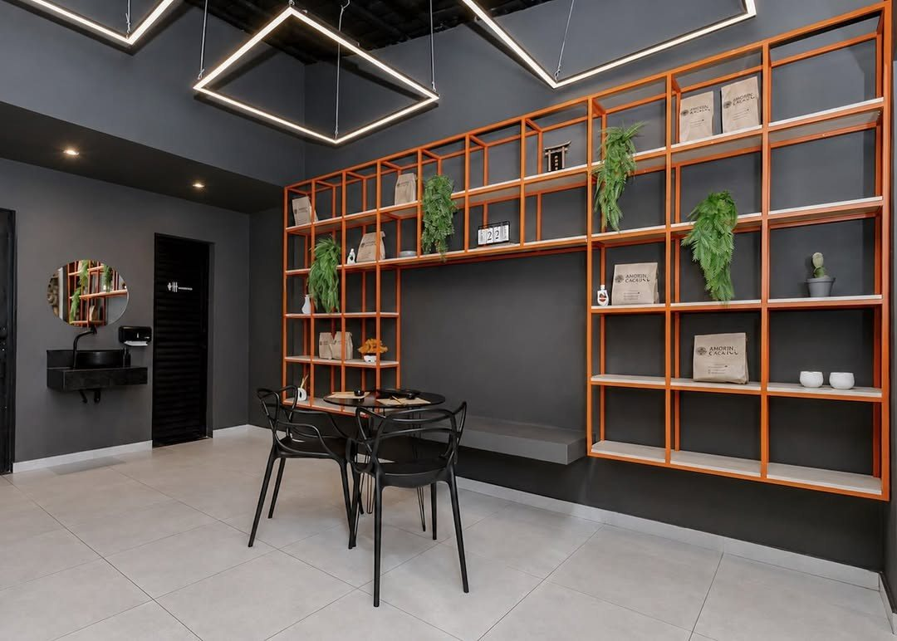

Início · A casa
Um balcão laranja e preto na Mata Escura
Sushi de bairro desde 2024, com o lema da capa do cardápio: “o amor que alimenta”.
Amor In SushiSushi de bairro · delivery e retirada no balcão
O balcão
Estética industrial com o laranja da marca
“…se destaca na estrutura metálica e ganha força sobre a base escura. Atendendo ao desejo da cliente por uma estética industrial, criamos um espaço contemporâneo, marcante e cheio de personalidade.”@carmoarquiteto, sobre o laranja da marca, em post com o Amor In Sushi, 03/09/2026

O jeito
Fresco, feito na hora, para levar
“Sushi fresco e feito na hora”Bio do Instagram @amorinsushi
A ficha do Google traz o atributo “Se identifica como uma empresa de empreendedoras”. O atendimento é só delivery e retirada no balcão, sem salão.
Ficou com dúvidas?
No cardápio, a casa escreve: “Chama a Mi que ela te ajuda!” 🧡
No bairro
Patrocinadora do Bloco As Abelhudas
“Por lá você encontra sushi, temaki, yakisoba e muitas outras opções deliciosas…”Bloco As Abelhudas, no Instagram, 22/08/2026
Onde fica
R. da União, 33 E · Mata Escura
Amor In SushiR. da União, 33 E · Mata Escura · Salvador · BAAbrir no Google Maps
Dúvidas frequentes
Perguntas comuns
Posso comer no local?
Não. O espaço é balcão de retirada; a casa trabalha com delivery e retirada.
Onde vejo as novidades?
No Instagram @amorinsushi, onde a casa posta lançamentos como o onigiri.
Peça agora
Escolha as peças, a gente cuida do resto.
Delivery para mais de 150 bairros de Salvador ou retirada no balcão da Rua da União, na Mata Escura. O pedido chega pronto no WhatsApp da casa.